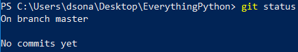
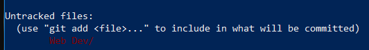
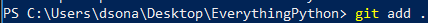
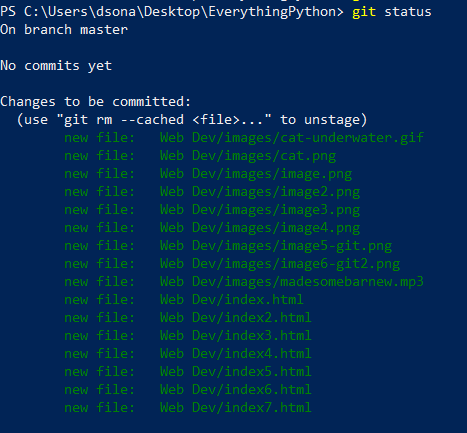
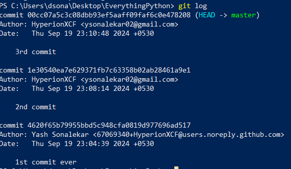

Github & Git Essentials
step-1 : always change directory from home (default in powershell) to the folder which you want to use git in.
cmd = cd ~/Desktop/foldernamehere
step-2 : see if the directory is changed to the folder which you want to use by using ls (list items cmd)
cmd = ls
step-3 : create the first version initialise git (sets up git inside the chosen folder)
cmd = git init
step-4 : check status - shows all the past activities done in that particular folder.
cmd = git status

step-5 : git will also tell us whether there are new files in that
chosen folder which are not added / committed to git.

step-6 : git add .
here dot represents the current folder which you are in.
therefore it will add the whole folder to git.

step-7 : checking the status again using
cmd = git status
output :

git add filenames lets us pick which files we want next in this specific version
step-8 : to create the first version (log)
cmd = git commit -m "type your message here..."
version = commit
-m lets us attach a message with the commit
step-9 : git log cmd
git log commands shows us all the commits (version) which have been
uploaded / commited up till now. for example I am making new additions to the website every now and then,
therefore I have commited 3 times. (made 3 versions)

therefore basic workflow of the git is
1. get into the folder which you want to work with
2. add files from that folder to git
3. commit them with a message
4. done
5. repeat the same again and again each time you need to add files and
commit them again and again...